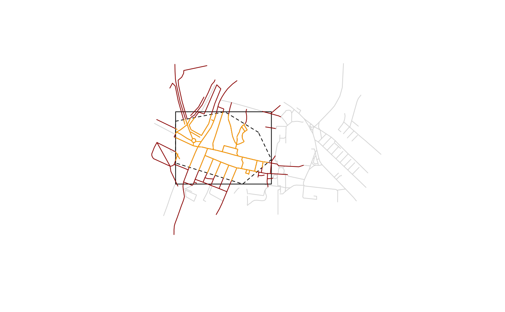

This function is used to find, download, translate, and read OSM extracts
obtained from several providers. It is a wrapper around oe_match() and
oe_read(). Check the introductory vignette, the examples, and the help
pages of the wrapped functions to understand the details behind all
parameters.
Usage
oe_get(
place,
layer = "lines",
...,
provider = "geofabrik",
match_by = "name",
max_string_dist = 1,
level = NULL,
version = "latest",
download_directory = oe_download_directory(),
force_download = FALSE,
max_file_size = 5e+08,
vectortranslate_options = NULL,
osmconf_ini = NULL,
extra_tags = NULL,
force_vectortranslate = FALSE,
boundary = NULL,
boundary_type = c("spat", "clipsrc"),
download_only = FALSE,
skip_vectortranslate = FALSE,
never_skip_vectortranslate = FALSE,
quiet = FALSE
)Arguments
- place
Description of the geographical area that should be matched with a
.osm.pbffile. Can be either a length-1 character vector, ansf/sfc/bboxobject with any CRS, or a numeric vector of coordinates with length 2. In the last case, it is assumed that the EPSG code is 4326 specified as c(LON, LAT), while you can use any CRS withsf/sfc/bboxobjects. See Details and Examples inoe_match().- layer
Which
layershould be read in? Typicallypoints,lines(the default),multilinestrings,multipolygonsorother_relations. If you specify an ad-hoc query using the argumentquery(see introductory vignette and examples), thenoe_get()andoe_read()will read the layer specified in the query and ignorelayerargument. See also #122.- ...
(Named) arguments that will be passed to
sf::st_read(), likequery,wkt_filterorstringsAsFactors. Check the introductory vignette to understand how to create your own (SQL-like) queries.- provider
Which provider should be used to download the data? Available providers can be browsed with
oe_providers(). Foroe_get()andoe_match(), ifplaceis equal toITS Leeds, thenprovideris internally set equal to"test". This is just for simple examples and internal tests.- match_by
Which column of the provider's database should be used for matching the input
placewith a.osm.pbffile? The default is"name". Check Details and Examples inoe_match()to understand how this parameter works. Ignored whenplaceis not a character vector since, in that case, the matching is performed through a spatial operation.- max_string_dist
Numerical value greater or equal than 0. What is the maximum distance in fuzzy matching (i.e. Approximate String Distance, see
adist()) between inputplaceandmatch_bycolumn that can be tolerated before testing alternative providers or looking for geographical matching with Nominatim API? This parameter is set equal to 0 ifmatch_byis equal toiso3166_1_alpha2oriso3166_2. Check Details and Examples inoe_match()to understand why this parameter is important. Ignored whenplaceis not a character vector since, in that case, the matching is performed through a spatial operation.- level
An integer representing the desired hierarchical level in case of spatial matching. For the
geofabrikprovider, for example,1corresponds with continent-level datasets,2for countries,3corresponds to regions and4to subregions. Hence, we could approximately say that smaller administrative units correspond to bigger levels. IfNULL, the default, theoe_*functions will select the highest available level. See Details and Examples inoe_match().- version
The version of the OSM extract to download. The default is "latest". Other possible values are typically specified using the format YYMMDD (e.g. "200101"). The complete list of all available historic files for a given extract can be browsed from the Geofabrik website (e.g. https://download.geofabrik.de/europe/italy.html and then click on 'raw directory index'). Note: the geographical coverage of an extract may change over time. For example, recent (2021+) extracts for Barcelona are at the regional level (cataluna), while older (2012-2021) extracts are at the national level (spain). This means that downloading historical data for a place like Barcelona may require changing the
placeargument to "spain" for older versions.- download_directory
Directory to store the file containing OSM data?.
- force_download
Should the
.osm.pbffile be updated even if it has already been downloaded?FALSEby default. This parameter is used to update old.osm.pbffiles.- max_file_size
The maximum file size to download without asking in interactive mode. Default:
5e+8, half a gigabyte.- vectortranslate_options
Options passed to the
sf::gdal_utils()argumentoptions. Set by default. Check details in the introductory vignette and the help page ofoe_vectortranslate().- osmconf_ini
The configuration file. See documentation at gdal.org. Check details in the introductory vignette and the help page of
oe_vectortranslate(). Set by default.Which additional columns, corresponding to OSM tags, should be in the resulting dataset?
NULLby default. Check the introductory vignette and the help pages ofoe_vectortranslate()andoe_get_keys(). Ignored whenosmconf_iniis notNULL.- force_vectortranslate
Boolean. Force the original
.pbffile to be translated into a.gpkgfile, even if a.gpkgwith the same name already exists?FALSEby default. If tags inextra_tagsmatch data in previously translated.gpkgfiles no translation occurs (see #173 for details). Check the introductory vignette and the help page ofoe_vectortranslate().- boundary
An
sf/sfc/bboxobject that will be used to create a spatial filter during the vectortranslate operations. If you are runningoe_get()andplaceis ansf/sfcpolygon or abbox, then it will be used asboundaryif the latter is not specified. Setboundary = NAto override this behaviour and forcefully import the full extract.- boundary_type
A character vector of length 1 specifying the type of spatial filter. The
spatfilter selects only those features that intersect a given area, whileclipsrcalso clips the geometries. Check the examples and also here for more details.- download_only
Boolean. If
TRUE, then the function only returns the path where the matched file is stored, instead of reading it.FALSEby default.- skip_vectortranslate
Boolean. If
TRUE, then the function skips all vectortranslate operations and it reads (or simply returns the path) of the.osm.pbffile.FALSEby default.- never_skip_vectortranslate
Boolean. This is used in case the user passed its own
.inifile or vectortranslate options (since, in those case, it's too difficult to determine if an existing.gpkgfile was generated following the same options.)- quiet
Boolean. If
FALSE, the function prints informative messages. Starting fromsfversion 0.9.6, ifquietis equal toFALSE, then vectortranslate operations will display a progress bar.
Details
The algorithm that we use for importing an OSM extract data into R is divided into 4 steps:
match the input
placewith the url of a.pbffile;download the
.pbffile;convert it into
.gpkgformat;read-in the
.gpkgfile.
The function oe_match() is used to
perform the first operation and the function oe_read() (which is a
wrapper around oe_download(), oe_vectortranslate() and sf::st_read())
performs the other three operations.
Examples
# Copy ITS file to tempdir so that the examples do not require internet
# connection. You can skip the next 4 lines when running the examples
# locally.
its_pbf = file.path(tempdir(), "test_its-example.osm.pbf")
file.copy(
from = system.file("its-example.osm.pbf", package = "osmextract"),
to = its_pbf,
overwrite = TRUE
)
#> [1] TRUE
# Match, download (not really) and convert OSM extracts associated to a simple test.
its = oe_get("ITS Leeds", download_directory = tempdir())
#> The input place was matched with: ITS Leeds
#> The chosen file was already detected in the download directory. Skip downloading.
#> Starting with the vectortranslate operations on the input file!
#> 0...10...20...30...40...50...60...70...80...90...100 - done.
#> Finished the vectortranslate operations on the input file!
#> Reading layer `lines' from data source `/tmp/RtmpBaRgcX/test_its-example.gpkg' using driver `GPKG'
#> Simple feature collection with 189 features and 10 fields
#> Geometry type: LINESTRING
#> Dimension: XY
#> Bounding box: xmin: -1.562458 ymin: 53.80471 xmax: -1.548076 ymax: 53.81105
#> Geodetic CRS: WGS 84
class(its)
#> [1] "sf" "data.frame"
unique(sf::st_geometry_type(its))
#> [1] LINESTRING
#> 18 Levels: GEOMETRY POINT LINESTRING POLYGON MULTIPOINT ... TRIANGLE
# Get another layer from ITS Leeds extract
its_points = oe_get("ITS Leeds", layer = "points", download_directory = tempdir())
#> The input place was matched with: ITS Leeds
#> The chosen file was already detected in the download directory. Skip downloading.
#> Adding a new layer to the .gpkg file.
#> Starting with the vectortranslate operations on the input file!
#> 0...10...20...30...40...50...60...70...80...90...100 - done.
#> Finished the vectortranslate operations on the input file!
#> Reading layer `points' from data source `/tmp/RtmpBaRgcX/test_its-example.gpkg' using driver `GPKG'
#> Simple feature collection with 186 features and 10 fields
#> Geometry type: POINT
#> Dimension: XY
#> Bounding box: xmin: -1.568766 ymin: 53.80569 xmax: -1.549451 ymax: 53.81136
#> Geodetic CRS: WGS 84
unique(sf::st_geometry_type(its_points))
#> [1] POINT
#> 18 Levels: GEOMETRY POINT LINESTRING POLYGON MULTIPOINT ... TRIANGLE
# Get the .osm.pbf and .gpkg files paths
oe_get(
"ITS Leeds", download_only = TRUE, quiet = TRUE,
download_directory = tempdir()
)
#> [1] "/tmp/RtmpBaRgcX/test_its-example.gpkg"
oe_get(
"ITS Leeds", download_only = TRUE, skip_vectortranslate = TRUE,
quiet = TRUE, download_directory = tempdir()
)
#> [1] "/tmp/RtmpBaRgcX/test_its-example.osm.pbf"
# See also ?oe_find()
# Add additional tags
its_with_oneway = oe_get(
"ITS Leeds", extra_tags = "oneway",
download_directory = tempdir()
)
#> The input place was matched with: ITS Leeds
#> The chosen file was already detected in the download directory. Skip downloading.
#> Starting with the vectortranslate operations on the input file!
#> 0...10...20...30...40...50...60...70...80...90...100 - done.
#> Finished the vectortranslate operations on the input file!
#> Reading layer `lines' from data source `/tmp/RtmpBaRgcX/test_its-example.gpkg' using driver `GPKG'
#> Simple feature collection with 189 features and 11 fields
#> Geometry type: LINESTRING
#> Dimension: XY
#> Bounding box: xmin: -1.562458 ymin: 53.80471 xmax: -1.548076 ymax: 53.81105
#> Geodetic CRS: WGS 84
names(its_with_oneway)
#> [1] "osm_id" "name" "highway" "waterway" "aerialway"
#> [6] "barrier" "man_made" "railway" "oneway" "z_order"
#> [11] "other_tags" "geometry"
table(its_with_oneway$oneway, useNA = "ifany")
#>
#> yes <NA>
#> 13 176
# Use the query argument to get only oneway streets:
q = "SELECT * FROM 'lines' WHERE oneway == 'yes'"
its_oneway = oe_get("ITS Leeds", query = q, download_directory = tempdir())
#> The input place was matched with: ITS Leeds
#> The chosen file was already detected in the download directory. Skip downloading.
#> The corresponding gpkg file was already detected. Skip vectortranslate operations.
#> Reading query `SELECT * FROM 'lines' WHERE oneway == 'yes''
#> from data source `/tmp/RtmpBaRgcX/test_its-example.gpkg' using driver `GPKG'
#> Simple feature collection with 13 features and 11 fields
#> Geometry type: LINESTRING
#> Dimension: XY
#> Bounding box: xmin: -1.558828 ymin: 53.80595 xmax: -1.548899 ymax: 53.809
#> Geodetic CRS: WGS 84
its_oneway[, c(1, 3, 9)]
#> Simple feature collection with 13 features and 3 fields
#> Geometry type: LINESTRING
#> Dimension: XY
#> Bounding box: xmin: -1.558828 ymin: 53.80595 xmax: -1.548899 ymax: 53.809
#> Geodetic CRS: WGS 84
#> First 10 features:
#> osm_id highway oneway geometry
#> 1 6277600 service yes LINESTRING (-1.552587 53.80...
#> 2 6277601 residential yes LINESTRING (-1.551771 53.80...
#> 3 6295680 trunk yes LINESTRING (-1.552894 53.80...
#> 4 31705836 trunk yes LINESTRING (-1.552349 53.80...
#> 5 31705838 trunk_link yes LINESTRING (-1.552261 53.80...
#> 6 38422788 trunk yes LINESTRING (-1.552261 53.80...
#> 7 147151516 service yes LINESTRING (-1.557987 53.80...
#> 8 151645336 residential yes LINESTRING (-1.552181 53.80...
#> 9 160502811 service yes LINESTRING (-1.553221 53.80...
#> 10 552695946 trunk_link yes LINESTRING (-1.551952 53.80...
# Apply a spatial filter during the vectortranslate operations
its_poly = sf::st_sfc(
sf::st_polygon(
list(rbind(
c(-1.55577, 53.80850),
c(-1.55787, 53.80926),
c(-1.56096, 53.80891),
c(-1.56096, 53.80736),
c(-1.55675, 53.80658),
c(-1.55495, 53.80749),
c(-1.55577, 53.80850)
))
),
crs = 4326
)
its_spat = oe_get("ITS Leeds", boundary = its_poly, download_directory = tempdir())
#> The input place was matched with: ITS Leeds
#> The chosen file was already detected in the download directory. Skip downloading.
#> Starting with the vectortranslate operations on the input file!
#> 0...10...20...30...40...50...60...70...80...90...100 - done.
#> Finished the vectortranslate operations on the input file!
#> Reading layer `lines' from data source `/tmp/RtmpBaRgcX/test_its-example.gpkg' using driver `GPKG'
#> Simple feature collection with 77 features and 10 fields
#> Geometry type: LINESTRING
#> Dimension: XY
#> Bounding box: xmin: -1.562458 ymin: 53.80471 xmax: -1.552941 ymax: 53.81102
#> Geodetic CRS: WGS 84
its_clipped = oe_get(
"ITS Leeds", boundary = its_poly, boundary_type = "clipsrc",
quiet = TRUE, download_directory = tempdir()
)
plot(sf::st_geometry(its), reset = FALSE, col = "lightgrey")
plot(sf::st_boundary(its_poly), col = "black", add = TRUE, lty = 2)
plot(sf::st_boundary(sf::st_as_sfc(sf::st_bbox(its_poly))), col = "black", add = TRUE)
plot(sf::st_geometry(its_spat), add = TRUE, col = "darkred")
plot(sf::st_geometry(its_clipped), add = TRUE, col = "orange")

# More complex examples
if (FALSE) { # \dontrun{
west_yorkshire = oe_get("West Yorkshire")
# If you run it again, the function will not download the file
# or convert it again
west_yorkshire = oe_get("West Yorkshire")
# Match with place name
oe_get("Milan") # Warning: the .pbf file is 400MB
oe_get("Vatican City") # Check all providers
oe_get("Zurich") # Uses Nominatim API for geolocating places
# Match with coordinates (any EPSG)
milan_duomo = sf::st_sfc(sf::st_point(c(1514924, 5034552)), crs = 3003)
oe_get(milan_duomo, quiet = FALSE) # Warning: the .pbf file is 400MB
# Match with numeric coordinates (EPSG = 4326)
oe_match(c(9.1916, 45.4650), quiet = FALSE)
# Check also alternative providers
baku = oe_get(place = "Baku")
# Other examples:
oe_get("RU", match_by = "iso3166_1_alpha2", quiet = FALSE)
# The following example mimics read_sf
oe_get("Andora", stringsAsFactors = FALSE, quiet = TRUE, as_tibble = TRUE)} # }
# Remove .pbf and .gpkg files in tempdir
oe_clean(tempdir())